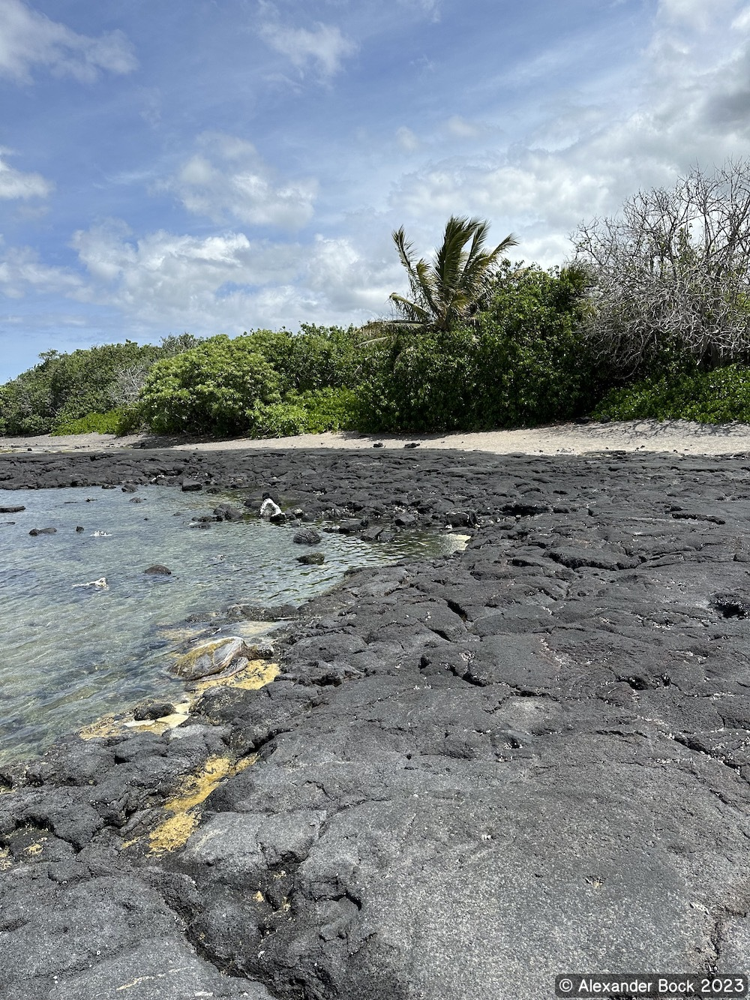

Hawaii-Alaska Hiking Trip 2023
Alex Bock 2023-04-07
Overview
I visited a variety of national and state parks and other destinations in Alaska and Hawaii over the past two weeks. Both states exhibited unique winter scenery in late March. In Alaska, I flew into Anchorage, drove south to Seward, and finally took Alaska Route 3 north to Fairbanks where I caught my next flight. Moving on to Hawaii (Hawai‘i island in particular), I started in Kona and proceeded to Hilo. Hiking Mauna Kea (over thirteen thousand feet above sea level) was the highlight of the trip.
Alaska
Kincaid Park
Eagle River
Flattop Mountain
Thunderbird Falls
Eklutna Lake
Bird Ridge
Seward
Kenai Fjords National Park
Denali National Park
Hawaii
Kaloko-Honokōhau National Historical Park
Kohala Forest Reserve
Hawai‘i Volcanoes National Park
Kaumana Caves
Rainbow Falls
Akaka Falls
Kawainui Stream
Onomea

Mauna Kea
Trip Maps
Alaska
Hawaii
Back to Index